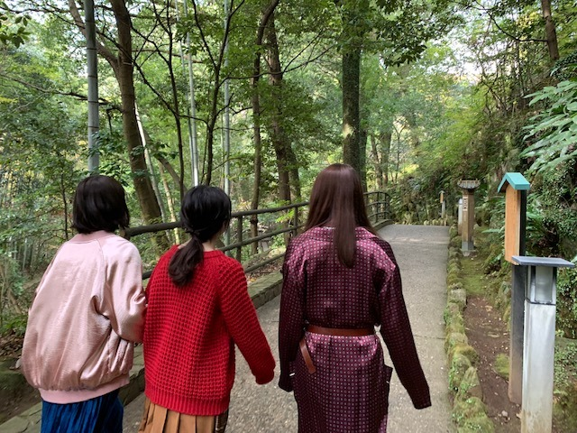

2019/0715Mon今までとこれからと
24枚目シングルの選抜発表がありました
今回も選抜に選んでいただき、嬉しく思います
ありがとうございますm(._.)m
乃木坂のこれからがもっと良くなるように全力で、私なりの形で頑張ります！
飛鳥と久しぶりのシンメで、謎の安心感もあるし、頑張らなきゃだよねって言葉は無くとも飛鳥とならいつも見てる向きとか感情が通じ合えている気が勝手にしています
そして初選抜のかきちゃん、さくらちゃん、あやめちゃんおめでとう☺︎
先輩達と一緒に活動できる時間は正直今までと比べるともうそんなに多くないと思っていて...
だからこそ今いるメンバーにたくさん頼ってほしいしいろんな先輩の姿を間近で見て色んなことを吸収していってほしいです
よろしくね！たくさん話せたらいいな✨
どんな経験も必ず身になるので今を一生懸命楽しんでほしい！
皆さんも温かく迎え入れてあげてください。

玲香さんと過ごす時間もあと少し
寂しいと楽しい気持ちが入り混じってよくわからない毎日です
泣きそうになる毎日と笑っていたい時間
でもやっぱり前へ歩かなきゃ
歩き続けなきゃ
昔の私は防波堤の上が怖くて歩く余裕なんて無くてちょこんと座るのが精一杯で
でも今ならかかとをあげて手を広げて海風の気持ちよさを感じなら歩く余裕があるみたい
これからの乃木坂46がよりよい方向にいきますように...
どんな季節も乃木坂も、好きって言ってもらえるように
私も頑張らなきゃ
24枚目も応援よろしくお願いしますm(._.)m

2019/07/15 15:30
コメント(486)
ずっと応援してるね
とりあえず選抜おめでとう！今回がどういう形であれ、堀ちゃんが選抜に選ばれ最前で活躍してる姿が見られるのは掘推しとして嬉しい限りです。キャプテン卒業はとても寂しいと思うしそれはファンも同じだと思います。時代は変わっていくものだし、ずっと『同じ』は続かないから2期生・3期生が乃木坂を引っ張っていく時が必ずくるんです。堀ちゃんが乃木坂の頭になって活躍する日を楽しみに待ってます。
堀ちゃん！24枚目頑張って！
未央奈おはよ！
選抜発表見ました！
乃木坂が何年先も活躍してくれることを願ってます！
選抜発表見ました！
乃木坂が何年先も活躍してくれることを願ってます！
選抜入りおめでとうございます
フロントに選ばれて、ファンとしても嬉しく思います。
４期生が３人も選ばれて、時代を変えるシングルになりそうですね
頑張って下さい
フロントに選ばれて、ファンとしても嬉しく思います。
４期生が３人も選ばれて、時代を変えるシングルになりそうですね
頑張って下さい
堀ちゃんフロントおめでとう〜。
4期メンバーを支えるポジション、大変なこともあると思うけど、今までいろんな経験を積んできた堀ちゃんだから期待してます。
飛鳥ちゃんとのシンメも楽しみです。
4期メンバーを支えるポジション、大変なこともあると思うけど、今までいろんな経験を積んできた堀ちゃんだから期待してます。
飛鳥ちゃんとのシンメも楽しみです。
ずっと応援してるね
未央奈フロントおめでとう！！
未央奈の経験を活かして、4期生を支えてあげてください。
あすかとのシンメ、すごく好き！！
体調に気をつけて頑張ってね
未央奈の経験を活かして、4期生を支えてあげてください。
あすかとのシンメ、すごく好き！！
体調に気をつけて頑張ってね
おはようございます‼︎
ブログ更新、ありがとうございます♪
24thシングルの選抜が発表されましたね‼︎
フロント常連の人たちが2列目に下がる中、未央奈は引き続きフロントメンバー。
そして、フロント真ん中の3名には4期生。
今までの乃木坂と、これからの乃木坂と。
どちらにも大きく関わっている未央奈に、その橋渡しを任されたのかもしれませんね♪
新規メンバーが突然センターを任されるのは、これが初めてではなくて。
2期生の時は、未央奈が1人センターに。
3期生の時は、与田ちゃんと桃子のダブルセンター。
今回は3人の4期生が真ん中なので、未央奈の時よりは1人1人のプレッシャーが少なくて済むのかもしれません♪
いずれにせよ未央奈は、彼女たちの不安やプレッシャーを理解できる数少ない先輩の1人です。
どうか、支えてあげてください…‼︎
なんて、こんなこと言わなくても、未央奈はきっとそのつもりですよね♪
未央奈はもう既に、頼れる優しい先輩。
なんか、隔世の感がありますね(笑)。
これからの乃木坂46、期待してます‼︎
頑張ってください♪
ではでは、また。
今日も未央奈にとっていい1日になりますように♪
ブログ更新、ありがとうございます♪
24thシングルの選抜が発表されましたね‼︎
フロント常連の人たちが2列目に下がる中、未央奈は引き続きフロントメンバー。
そして、フロント真ん中の3名には4期生。
今までの乃木坂と、これからの乃木坂と。
どちらにも大きく関わっている未央奈に、その橋渡しを任されたのかもしれませんね♪
新規メンバーが突然センターを任されるのは、これが初めてではなくて。
2期生の時は、未央奈が1人センターに。
3期生の時は、与田ちゃんと桃子のダブルセンター。
今回は3人の4期生が真ん中なので、未央奈の時よりは1人1人のプレッシャーが少なくて済むのかもしれません♪
いずれにせよ未央奈は、彼女たちの不安やプレッシャーを理解できる数少ない先輩の1人です。
どうか、支えてあげてください…‼︎
なんて、こんなこと言わなくても、未央奈はきっとそのつもりですよね♪
未央奈はもう既に、頼れる優しい先輩。
なんか、隔世の感がありますね(笑)。
これからの乃木坂46、期待してます‼︎
頑張ってください♪
ではでは、また。
今日も未央奈にとっていい1日になりますように♪
今日は朝早くからメール届いた笑
朝から撮影お疲れです。
だいたい朝ってメールしない方だよね？
未央奈ちゃんは？
朝から撮影お疲れです。
だいたい朝ってメールしない方だよね？
未央奈ちゃんは？
おはよう、みおな❗️❗️(笑)
乃木中・・・
僕も、みおなの目の角度、好きだなぁ・・・(笑)
イマイチ、分かるような分からないような例えではあるけど(笑)、言いたいことは分かる・・・(笑)
でもさ、そのお話しを聞いたあとのみおなの笑顔だよね❗️(笑)
笑った時の目・・・
癒されるし、そして、大好きな上唇の真ん中・・・(笑)
このちょっと厚ぼったくなったところ、本当に好きなんだよね・・・
ポニーテールみおな、マジでかわいいんだけど❗️❗️❗️❗️(笑)
そして、選抜フロントおめでとう❗️❗️❗️(笑)
よく頑張ったね❗️❗️(笑)
やっぱり、みおなは、フロント・・・
僕は、そこにこだわりたい❗️❗️
みおならしいパフォーマンス、期待してるからね❗️❗️(笑)
そのためにも、しっかり、みおなのことサポートするから❗️❗️❗️
さみしがり屋のみおなは、愛されてこそ・・・
愛されてこそ、愛することができる・・・
みおなのこと、たっくさん(笑)愛さないとね❗️❗️(笑)
何も心配することないから・・・
のびのびと活動してね❗️❗️(笑)
それじゃ、またね❗️❗️(笑)
乃木中・・・
僕も、みおなの目の角度、好きだなぁ・・・(笑)
イマイチ、分かるような分からないような例えではあるけど(笑)、言いたいことは分かる・・・(笑)
でもさ、そのお話しを聞いたあとのみおなの笑顔だよね❗️(笑)
笑った時の目・・・
癒されるし、そして、大好きな上唇の真ん中・・・(笑)
このちょっと厚ぼったくなったところ、本当に好きなんだよね・・・
ポニーテールみおな、マジでかわいいんだけど❗️❗️❗️❗️(笑)
そして、選抜フロントおめでとう❗️❗️❗️(笑)
よく頑張ったね❗️❗️(笑)
やっぱり、みおなは、フロント・・・
僕は、そこにこだわりたい❗️❗️
みおならしいパフォーマンス、期待してるからね❗️❗️(笑)
そのためにも、しっかり、みおなのことサポートするから❗️❗️❗️
さみしがり屋のみおなは、愛されてこそ・・・
愛されてこそ、愛することができる・・・
みおなのこと、たっくさん(笑)愛さないとね❗️❗️(笑)
何も心配することないから・・・
のびのびと活動してね❗️❗️(笑)
それじゃ、またね❗️❗️(笑)
ブログ更新ありがとう！
こうやって選抜発表後すぐに755やブログ更新してくれるところがすごくいいなって思うよ！
今回も選抜のフロントおめでとう☺︎
どこにいてもみおちゃん大好きなことには変わりないけど、やっぱりフロントだと嬉しい〜！
あと飛鳥とのシンメ好きだから楽しみ♪
みおちゃんはバレッタで突然センターに選ばれたことがあるからこそ、今の4期生の気持ちも十分理解してあげられると思うから横からたくさん支えてあげてください！
みおちゃんの言葉聞いて思いが伝わってきたから25枚目も乃木坂応援しなきゃって思えたよ！
でも正直最後の写真見たら辛くなっちゃった。。
26枚目ではみおちゃんがまた大好きな2人と一緒に選抜で歌えるように願ってます！！
2期生のみんなももっと選抜入れますように！
今週中にはホットギミックといつのまにか、ここにいる見れそう❤︎
こうやって選抜発表後すぐに755やブログ更新してくれるところがすごくいいなって思うよ！
今回も選抜のフロントおめでとう☺︎
どこにいてもみおちゃん大好きなことには変わりないけど、やっぱりフロントだと嬉しい〜！
あと飛鳥とのシンメ好きだから楽しみ♪
みおちゃんはバレッタで突然センターに選ばれたことがあるからこそ、今の4期生の気持ちも十分理解してあげられると思うから横からたくさん支えてあげてください！
みおちゃんの言葉聞いて思いが伝わってきたから25枚目も乃木坂応援しなきゃって思えたよ！
でも正直最後の写真見たら辛くなっちゃった。。
26枚目ではみおちゃんがまた大好きな2人と一緒に選抜で歌えるように願ってます！！
2期生のみんなももっと選抜入れますように！
今週中にはホットギミックといつのまにか、ここにいる見れそう❤︎
未央奈と飛鳥ちゃんのシンメ最高に好き！！
ずっとずっと好きだよ〜
次のシングルも楽しみです。
そしてライブもがんばってね。
そしてライブもがんばってね。
未央奈ブログ更新ｱﾘ*:･(*-ω人)･:*ｶﾞﾄ
フロント╰(*´︶`*)╯ｵﾒﾃﾞﾄｳ♡
頑張ってね！
みおなの頑張り好きすぎるから頭から離れないんだけどーー笑笑
最後の写真は24枚目の特典映像かな？
楽しみにしてるね〜☺❤
早く握手したいよぉぉ
こばより
フロント╰(*´︶`*)╯ｵﾒﾃﾞﾄｳ♡
頑張ってね！
みおなの頑張り好きすぎるから頭から離れないんだけどーー笑笑
最後の写真は24枚目の特典映像かな？
楽しみにしてるね〜☺❤
早く握手したいよぉぉ
こばより
素敵なブログだ
未央奈、フロントおめでとう。後輩の事を見守りつつになるだろうけど、頑張って。未央奈の振りと、歌が大好きだよ。シングアウトの衣装は、めっちゃかっこ良かったから、この作品のも期待してます。
フロントおめでとう！
24枚目も期待しています！
24枚目も期待しています！
24枚目の選抜入り、そして
フロントおめでとう(＾ω＾)
飛鳥ちゃんとのシンメ楽しみ♪
４期ちゃんを、支えてあげて
くださいね＼(^o^)／
キャプテンとの時間も大切に..
フロントおめでとう(＾ω＾)
飛鳥ちゃんとのシンメ楽しみ♪
４期ちゃんを、支えてあげて
くださいね＼(^o^)／
キャプテンとの時間も大切に..
(*^^*)未央奈ブログありがと
4期生も入ってすごく新しい楽曲になるんじゃないかな〜 未央奈らしく頑張ってね応援してます
4期生も入ってすごく新しい楽曲になるんじゃないかな〜 未央奈らしく頑張ってね応援してます
初コメント失礼します！
選抜フロントおめでとうございます！
今からどんなシングルになるのか凄い楽しみです！
そして755から来たんですけどSEAMOの曲はふざけてるのも多いけどいい曲も意外とけっこうあるので聞いてみてほしいです！
これからもみおなさんが活躍できることを祈ってます！
選抜フロントおめでとうございます！
今からどんなシングルになるのか凄い楽しみです！
そして755から来たんですけどSEAMOの曲はふざけてるのも多いけどいい曲も意外とけっこうあるので聞いてみてほしいです！
これからもみおなさんが活躍できることを祈ってます！
フロントおめでとう！
ずっと応援します！
ずっと応援します！
未央奈と、飛鳥ちゃんに両サイド固めてもらえたら、4期の娘たちも安心だと思うよ。今から楽しみだし、CD屋さんに予約しにいこうかな？
24枚目頑張れー
音楽の日第二部観ました。淋しい熱帯魚を歌われる、堀さんの、せつない表情が、とても素敵でした。堀さんは、なんでもできる人だと思います。たった1％の可能性があれば、堀さんなら大丈夫です。堀さんは、人の意見など気にせずに、堀さんの楽しさやワクワクから生まれる光で、闇を光に変える。堀さんは日本を救う愛のスーパーヒーロー女神様です。
いつも応援してます〜！
今回も笑顔いっぱいで頑張ってください！
ファイト〜未央奈ー
今回も笑顔いっぱいで頑張ってください！
ファイト〜未央奈ー
みおなすきすき⸜❤︎⸝
未央奈と飛鳥ちゃんのシンメ最高に好き！！
今回の選抜はうーんってなってたけど未央奈のブログよんで、
応援しなきゃって思った！
未央奈がバレッタでセンターに選ばれた時もびっくりしたけどすっごいいいシングルだなって思えたし、24枚目でもそう思えるように全力で応援する！！
そう思わせてくれてありがとう。
未央奈と飛鳥ちゃんのシンメ最高に好き！！
今回の選抜はうーんってなってたけど未央奈のブログよんで、
応援しなきゃって思った！
未央奈がバレッタでセンターに選ばれた時もびっくりしたけどすっごいいいシングルだなって思えたし、24枚目でもそう思えるように全力で応援する！！
そう思わせてくれてありがとう。
未央奈ちゃんブログありがとう！そして24枚目シングル選抜おめでとう！フロントで飛鳥ちゃんと一緒に4期生の3人を支えてあげてください(^ ^)
そして未央奈ちゃんも前のシングルを超えるくらいのパフォーマンスを見れる事を楽しみにしてます！
どんなシングルになるか楽しみに待ってます！
そして未央奈ちゃんも前のシングルを超えるくらいのパフォーマンスを見れる事を楽しみにしてます！
どんなシングルになるか楽しみに待ってます！
応援してるよー
こんにちはお疲れさま。
今日明日休みで先週にひいた風邪？
午前に病院行って、夏風邪って言われたよ(笑)久しぶりに風邪は流石にしんどいや(笑)
たまたま連休で良かったです☺
堀ちゃんの堤防を歩く姿見て、子供の頃を思い出したよ✨
海風気持ち良いねんな～✨
キャプテン玲香ちゃんも卒業を決めた今。
このツアーも含めより新しい乃木坂で帆を進めてほしいです☺
堀ちゃん、飛鳥ちゃんが先頭に立って！
個人的希望かな？
みんな含めて乃木坂。
力を合わせて頑張ってください✨
応援するよ✨
ではではまたね。
体調気をつけてね。
ほなね、堀ちゃん☺
リラックスして頑張りや☺
今日明日休みで先週にひいた風邪？
午前に病院行って、夏風邪って言われたよ(笑)久しぶりに風邪は流石にしんどいや(笑)
たまたま連休で良かったです☺
堀ちゃんの堤防を歩く姿見て、子供の頃を思い出したよ✨
海風気持ち良いねんな～✨
キャプテン玲香ちゃんも卒業を決めた今。
このツアーも含めより新しい乃木坂で帆を進めてほしいです☺
堀ちゃん、飛鳥ちゃんが先頭に立って！
個人的希望かな？
みんな含めて乃木坂。
力を合わせて頑張ってください✨
応援するよ✨
ではではまたね。
体調気をつけてね。
ほなね、堀ちゃん☺
リラックスして頑張りや☺
フロントおめでとう！
今回のシングルも楽しみにしてるよ！
今回のシングルも楽しみにしてるよ！
未央奈神推し
でも、箱推しだから安心して！
でも、箱推しだから安心して！
みおなー‼️
選抜おめでとー‼️
かっきー、さくちゃん、あやめちゃんが初選抜良かったなぁって思った！
れかたん…
やめないでほしいなぁ…
でもここでマイナスに捉えないでこれからも一ファンとして応援してく‼️
ねぇ、みおな…
好きっ
ねーぇ彼女になってほしいなぁ❤️
無理だよね…
これからも頑張って‼️
応援してるお
だぁいすき！
飛鳥と良かったねぇ！！
選抜おめでとー‼️
かっきー、さくちゃん、あやめちゃんが初選抜良かったなぁって思った！
れかたん…
やめないでほしいなぁ…
でもここでマイナスに捉えないでこれからも一ファンとして応援してく‼️
ねぇ、みおな…
好きっ
ねーぇ彼女になってほしいなぁ❤️
無理だよね…
これからも頑張って‼️
応援してるお
だぁいすき！
飛鳥と良かったねぇ！！
堀さんがセンターに抜擢されたのは一人きりでしたね。今回は四期生が３人。堀さんのプレッシャーを考えると想像もつきませんが、あの経験が後輩に優しくなれるのだと思います。なのでそんな堀さんが好きです(笑)頑張り過ぎず頑張ってくださいね。身体はご自愛くださいね。
ブログ更新ありがとうございます！
選抜、福神入りおめでとうございます！
乃木坂46全員で最高のシングルにしてください！
選抜、福神入りおめでとうございます！
乃木坂46全員で最高のシングルにしてください！
みおな選抜メンバーとフロントおめでとう＼(^o^)／
24枚目シングルも凄く楽しみにしてるよ！
頼もしいブログだね(^^)d凄く期待してるよ～
(*´∀`)♪
初選抜入りした4期生を支えてあげてね！
応援してるよp(^^)q
頑張ったね！
では(*￣∇￣)ノ
24枚目シングルも凄く楽しみにしてるよ！
頼もしいブログだね(^^)d凄く期待してるよ～
(*´∀`)♪
初選抜入りした4期生を支えてあげてね！
応援してるよp(^^)q
頑張ったね！
では(*￣∇￣)ノ
みおなちゃん更新ありがとう╰(*´︶`*)╯♡
乃木中観たよー(*´꒳`*)
24枚目の選抜・福神・フロントおめでとう！
飛鳥ちゃんとのシンメ安心感あります(๑>◡<๑)
良きコンビです（╹◡╹）♡
初選抜の3人もおめでとうございます！
一緒に乃木坂46を盛り上げて行けたら良きですね(● ˃̶͈̀ロ˂̶͈́)੭ꠥ⁾⁾
れいかちゃんの最後のシングルになるので日々を大切に過ごさないとね(*´-`)
応援しております
乃木中観たよー(*´꒳`*)
24枚目の選抜・福神・フロントおめでとう！
飛鳥ちゃんとのシンメ安心感あります(๑>◡<๑)
良きコンビです（╹◡╹）♡
初選抜の3人もおめでとうございます！
一緒に乃木坂46を盛り上げて行けたら良きですね(● ˃̶͈̀ロ˂̶͈́)੭ꠥ⁾⁾
れいかちゃんの最後のシングルになるので日々を大切に過ごさないとね(*´-`)
応援しております
しっかりと次につなげていこうね！
固くならないように、予定調和にならないように柔軟に前に進んで行って下さい・・・。
今週後半も頑張って行きましょう！！！
今週後半も頑張って行きましょう！！！
いつもブログ更新ありがとう！
24枚目シングルの選抜とフロントおめでとう！
24枚目は、きっと「逃げ水」の時の白石さんと西野さんのような立場に未央奈ちゃんと飛鳥ちゃんがなるんですよね。
4期生を引っ張っていかなきゃいけないという責任の重い立場にあるかと思いますが、いろんな経験をして、何事にも一生懸命に全力で頑張ってきた未央奈ちゃんなら、この役目も立派に果たせると思います！
未央奈ちゃんが信じた道を私も信じますし、全力で応援します！頑張ってください！
梅雨明けが遅く、体調を崩しやすい季節ですので、お身体には十分に気をつけて下さいね！
24枚目シングルの選抜とフロントおめでとう！
24枚目は、きっと「逃げ水」の時の白石さんと西野さんのような立場に未央奈ちゃんと飛鳥ちゃんがなるんですよね。
4期生を引っ張っていかなきゃいけないという責任の重い立場にあるかと思いますが、いろんな経験をして、何事にも一生懸命に全力で頑張ってきた未央奈ちゃんなら、この役目も立派に果たせると思います！
未央奈ちゃんが信じた道を私も信じますし、全力で応援します！頑張ってください！
梅雨明けが遅く、体調を崩しやすい季節ですので、お身体には十分に気をつけて下さいね！
みおな！
大丈夫、ファンも同じ気持ち！
応援します。
大丈夫、ファンも同じ気持ち！
応援します。
堀ちゃんこんばんは！
24thシングル、選抜&フロントおめでとうございます！
今回も堀ちゃんのことをたくさん見られそうで嬉しいです( ´ ▽ ` )
どんな振り付けで、堀ちゃんのどんな雰囲気のダンスが見られるのか、今から楽しみです、ほんとに堀ちゃんの踊っている姿が好きなので(o^^o)
4期生の皆さんのことは正直まだよく知れていませんが、このシングルでまた素敵なところを知っていけたらと思います(^^)
のりさんが好きな「お姉さん感のある堀ちゃん」もたくさん見られますかね？( ´ ▽ ` )笑
今回のフォーメーションや玲香さんの卒業、乃木坂も巡り巡っていくなぁと実感しています( ´ ー ` )
個人的に変化を拒むタイプではないですが、今の乃木坂が大好きだから、ずっと今を見続けたいなぁと思ってしまうこともあり(._.)
でも、それは一ファンの単なるワガママで、変わっていこう、もっと良くしていこうという皆さんの気持ちも感じるので、ずっと今が続くことがいいわけでもないなぁと思うこともあり(._.)
そんな葛藤で、なんだか少し感傷的にもなってしまいますね、本当に今の乃木坂は素敵すぎる( ´ ▽ ` )笑
そんな中でも変化も少し楽しみだったり。
今までも変化は間違いなくありましたが、それを経てもどんどん好きになってきた今の自分もいるので(^^)
今までの乃木坂が好きなのはもちろん変わらない、これからの乃木坂が好きなのも間違いない(o^^o)
変わるところはあっても、大好きな乃木坂の根幹は変わらない、なんとなくですが確信めいたものもあるので( ´ ▽ ` )
色んな寂しさはありますが、応援し続けることに迷いは微塵もないです！
こんなときだから堀ちゃんにちゃんと伝えたいです
どんなときもファンのことを想って気持ちを発信してくれたり
乃木坂全体のことを想って言葉を綴ったり
メンバーへの尊敬、愛情を素直に表してくれたり
その行動、言動に救われているファンは僕だけじゃないと思います(^^)
堀ちゃんが乃木坂に入ってくれて、堀ちゃんのことを好きになれて本当に幸せです( ´ ▽ ` )
いつもありがとう、今後ともよろしくお願いします(o^^o)
さてさて、梅雨明け目前ですかね！
来週には明けて夏になるとかなるとか！
雨も嫌いではないですが、やっぱり夏が好きすぎて待ち遠しい毎日です(o^^o)♩
京セラ、神宮のライブが本当に楽しみです！
僕は堀ちゃんたちのおかげで楽しい夏になることは確定しているので、堀ちゃんも健康で楽しい夏を過ごせますように( ´ ▽ ` )
長々と勝手にすみません、でもまたコメントさせてください！笑
24thシングル、選抜&フロントおめでとうございます！
今回も堀ちゃんのことをたくさん見られそうで嬉しいです( ´ ▽ ` )
どんな振り付けで、堀ちゃんのどんな雰囲気のダンスが見られるのか、今から楽しみです、ほんとに堀ちゃんの踊っている姿が好きなので(o^^o)
4期生の皆さんのことは正直まだよく知れていませんが、このシングルでまた素敵なところを知っていけたらと思います(^^)
のりさんが好きな「お姉さん感のある堀ちゃん」もたくさん見られますかね？( ´ ▽ ` )笑
今回のフォーメーションや玲香さんの卒業、乃木坂も巡り巡っていくなぁと実感しています( ´ ー ` )
個人的に変化を拒むタイプではないですが、今の乃木坂が大好きだから、ずっと今を見続けたいなぁと思ってしまうこともあり(._.)
でも、それは一ファンの単なるワガママで、変わっていこう、もっと良くしていこうという皆さんの気持ちも感じるので、ずっと今が続くことがいいわけでもないなぁと思うこともあり(._.)
そんな葛藤で、なんだか少し感傷的にもなってしまいますね、本当に今の乃木坂は素敵すぎる( ´ ▽ ` )笑
そんな中でも変化も少し楽しみだったり。
今までも変化は間違いなくありましたが、それを経てもどんどん好きになってきた今の自分もいるので(^^)
今までの乃木坂が好きなのはもちろん変わらない、これからの乃木坂が好きなのも間違いない(o^^o)
変わるところはあっても、大好きな乃木坂の根幹は変わらない、なんとなくですが確信めいたものもあるので( ´ ▽ ` )
色んな寂しさはありますが、応援し続けることに迷いは微塵もないです！
こんなときだから堀ちゃんにちゃんと伝えたいです
どんなときもファンのことを想って気持ちを発信してくれたり
乃木坂全体のことを想って言葉を綴ったり
メンバーへの尊敬、愛情を素直に表してくれたり
その行動、言動に救われているファンは僕だけじゃないと思います(^^)
堀ちゃんが乃木坂に入ってくれて、堀ちゃんのことを好きになれて本当に幸せです( ´ ▽ ` )
いつもありがとう、今後ともよろしくお願いします(o^^o)
さてさて、梅雨明け目前ですかね！
来週には明けて夏になるとかなるとか！
雨も嫌いではないですが、やっぱり夏が好きすぎて待ち遠しい毎日です(o^^o)♩
京セラ、神宮のライブが本当に楽しみです！
僕は堀ちゃんたちのおかげで楽しい夏になることは確定しているので、堀ちゃんも健康で楽しい夏を過ごせますように( ´ ▽ ` )
長々と勝手にすみません、でもまたコメントさせてください！笑
未央奈はいつも前を向いてるから大丈夫
でも
もしどっちが前か分からなくなってしまったら
24thシングル期間は立ち止まって未央奈の位置から左の方を見ればいいと思います
17人のメンバーが未央奈と同じ方を向いてたら大丈夫です
未央奈と飛鳥ちゃんが未来ある4期生を引っ張って
4期生にとって先輩に当たるメンバーが後ろからサポートするフォーメーションに自分は解釈しました
選抜フロントポジションおめでとう
でも
もしどっちが前か分からなくなってしまったら
24thシングル期間は立ち止まって未央奈の位置から左の方を見ればいいと思います
17人のメンバーが未央奈と同じ方を向いてたら大丈夫です
未央奈と飛鳥ちゃんが未来ある4期生を引っ張って
4期生にとって先輩に当たるメンバーが後ろからサポートするフォーメーションに自分は解釈しました
選抜フロントポジションおめでとう
未央奈ちゃん、ひろっしーです！コメント投稿601回目です！
前回はブログ「辛党になりつつある」にブログとモバメと「音楽の日」と選抜発表の感想を書きました！
時間→「No.301 2019年7月15日 01:47」
ブログ更新ありがとうございます！
「乃木中」のイントロクイズとパーツクイズ、盛り上がりましたね！毎週これでも良いな～！
メンバーの脚を当てた公式お兄ちゃん凄いね！未だに飛鳥ちゃんとかずみんのリアクションが頭から離れません(笑) 本当に2人素でしたね！
あと、久保ちゃんが未央奈ちゃんの目の角度を褒めていた時の顔のアップが可愛すぎました！
改めて選抜入りおめでとうございます！
今回もフロント、もうすっかり常連ですね(嬉)
「帰り道～」では久し振りに2列目だったので「Sing Out!」でフロントに選ばれた時は凄く嬉しくて、改めてフロントに選ばれる事の有り難さを感じました！
今回「シンクロニシティ」振りに飛鳥ちゃんとシンメですね！以心伝心、飛鳥ちゃんも同じ事思っていたら良いですね！どうかな～？
そして今回4期生が3人も選抜入りしました！
昨年の1期生や2期生メンバーの卒業、4期生の加入、メンバーの入れ替わりが激しい状況の中キャプテンの玲香ちゃんも卒業されますね(寂)
だからこそ、今いるメンバーと一緒にいられる時間を大切にして欲しいですし、特に4期生のメンバーには先輩メンバーから沢山の事を学び吸収して成長して欲しいです！このシングルで新たな乃木坂が観られるの、めっちゃ楽しみ！
どんな季節も乃木坂も、ずっと大好きです！
嫌いになんてならないよ！僕も頑張らないと！
こちらこそ24枚目よろしくお願いします！
ここまで読んで頂きありがとうございました！
毎日お仕事お疲れ様です！体調にはくれぐれも気を付けて頑張ってくださいね！
おやすみおな～！
前回はブログ「辛党になりつつある」にブログとモバメと「音楽の日」と選抜発表の感想を書きました！
時間→「No.301 2019年7月15日 01:47」
ブログ更新ありがとうございます！
「乃木中」のイントロクイズとパーツクイズ、盛り上がりましたね！毎週これでも良いな～！
メンバーの脚を当てた公式お兄ちゃん凄いね！未だに飛鳥ちゃんとかずみんのリアクションが頭から離れません(笑) 本当に2人素でしたね！
あと、久保ちゃんが未央奈ちゃんの目の角度を褒めていた時の顔のアップが可愛すぎました！
改めて選抜入りおめでとうございます！
今回もフロント、もうすっかり常連ですね(嬉)
「帰り道～」では久し振りに2列目だったので「Sing Out!」でフロントに選ばれた時は凄く嬉しくて、改めてフロントに選ばれる事の有り難さを感じました！
今回「シンクロニシティ」振りに飛鳥ちゃんとシンメですね！以心伝心、飛鳥ちゃんも同じ事思っていたら良いですね！どうかな～？
そして今回4期生が3人も選抜入りしました！
昨年の1期生や2期生メンバーの卒業、4期生の加入、メンバーの入れ替わりが激しい状況の中キャプテンの玲香ちゃんも卒業されますね(寂)
だからこそ、今いるメンバーと一緒にいられる時間を大切にして欲しいですし、特に4期生のメンバーには先輩メンバーから沢山の事を学び吸収して成長して欲しいです！このシングルで新たな乃木坂が観られるの、めっちゃ楽しみ！
どんな季節も乃木坂も、ずっと大好きです！
嫌いになんてならないよ！僕も頑張らないと！
こちらこそ24枚目よろしくお願いします！
ここまで読んで頂きありがとうございました！
毎日お仕事お疲れ様です！体調にはくれぐれも気を付けて頑張ってくださいね！
おやすみおな～！
おはよう、未央奈ちゃん
いつのまにか、ここにいる 見てきたよ。
改めて素敵なグループだと思いました。
メンバー自身はこんな素敵なグループに居られる事を誇りに思っていると思うし
ファンとしてもこんな素敵なグループを応援できる事を光栄に思います。
本当にありがとう。
いつのまにか、ここにいる 見てきたよ。
改めて素敵なグループだと思いました。
メンバー自身はこんな素敵なグループに居られる事を誇りに思っていると思うし
ファンとしてもこんな素敵なグループを応援できる事を光栄に思います。
本当にありがとう。
ドキュメンタリー映画まだ見に行けてない～。
絶対見に行きます！
連休だった日に見に行ってきます笑
最近、単休しかないなら全然見に行けない
連休だったら何とか見に行けるよ。
プロ野球は後半戦がスタート！
セリーグは2位から5位までがゲーム差1で熾烈に
なってきてる！
中日、６連勝凄いね！。
今年のセリーグは中日が面白い存在になるんじゃないかなと言われてるんだよ！
絶対見に行きます！
連休だった日に見に行ってきます笑
最近、単休しかないなら全然見に行けない
連休だったら何とか見に行けるよ。
プロ野球は後半戦がスタート！
セリーグは2位から5位までがゲーム差1で熾烈に
なってきてる！
中日、６連勝凄いね！。
今年のセリーグは中日が面白い存在になるんじゃないかなと言われてるんだよ！
最後の写真、意味深ですね。
いつまでも、三人、前を向いて歩き続ければ良いですね。
いつまでも、三人、前を向いて歩き続ければ良いですね。
選抜、フロントおめでとうございます！
24thどんな曲になるのか楽しみです。
24thどんな曲になるのか楽しみです。


フロントおめでとう！！
飛鳥ちゃんとのシンメ、
安定感抜群だね！素敵！
これからも未央奈ちゃんらしさ全開で頑張ってね！
私も応援頑張ります！
初選抜の4期生たち。
未央奈ちゃんが一番気持ちを察することができると思うので、
しっかり支えてあげてね！
(偉そうにすみません。笑)
24枚目も素敵なシングルになりますよーに。